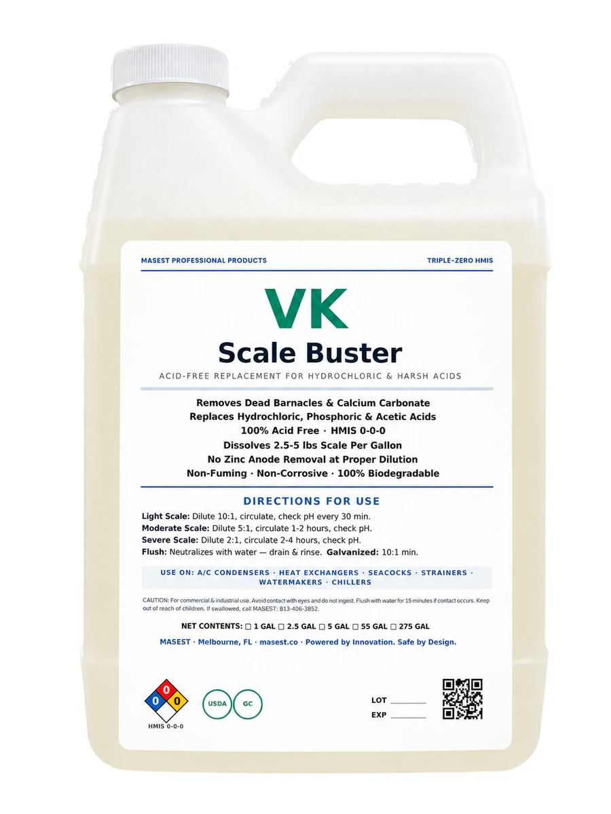
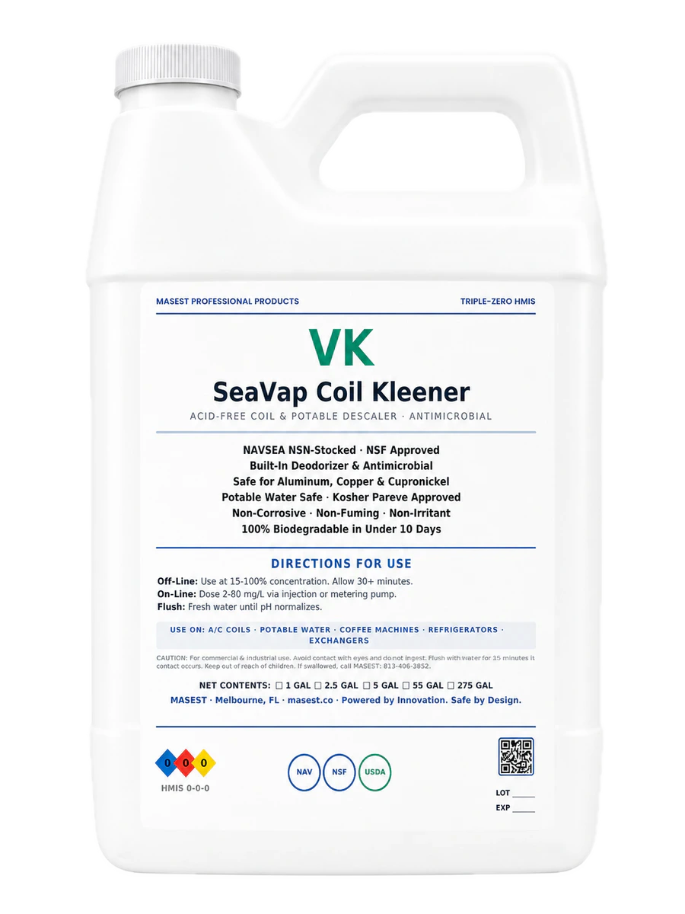
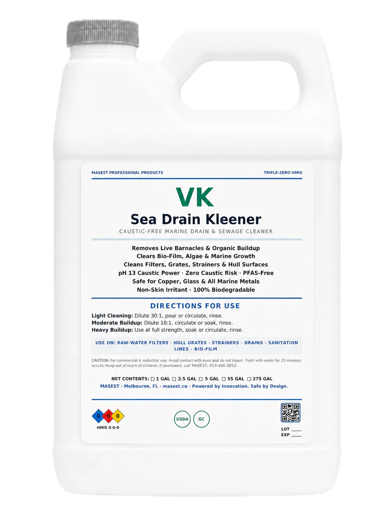
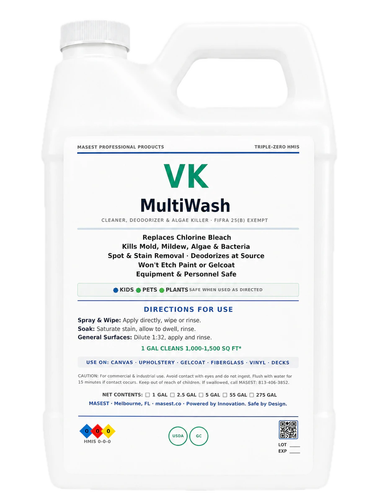
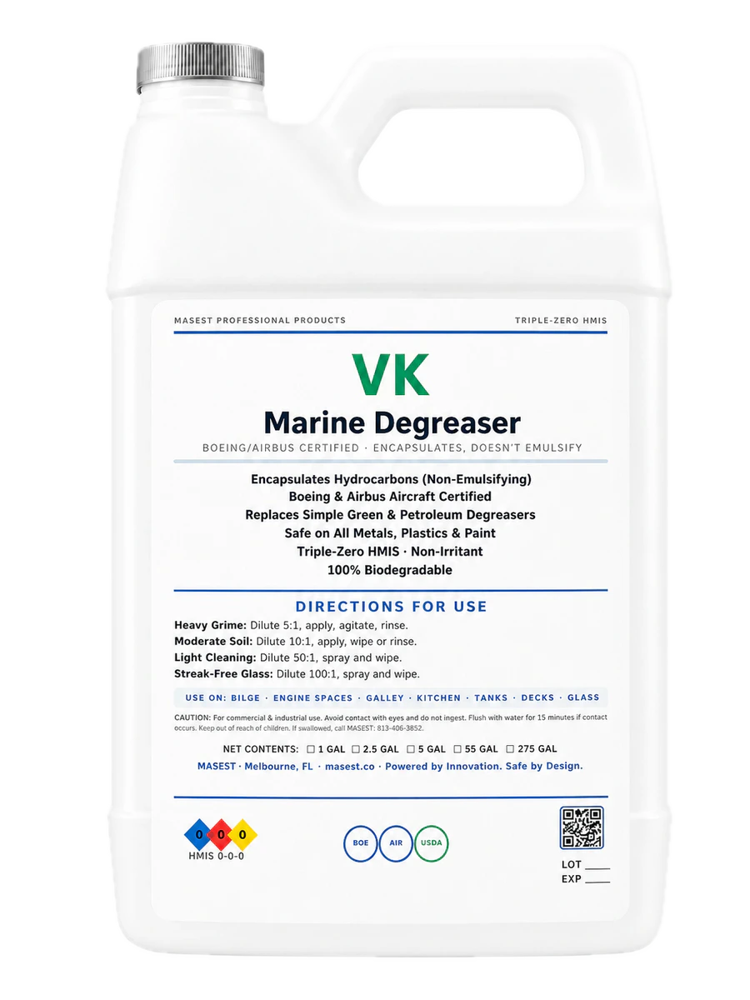
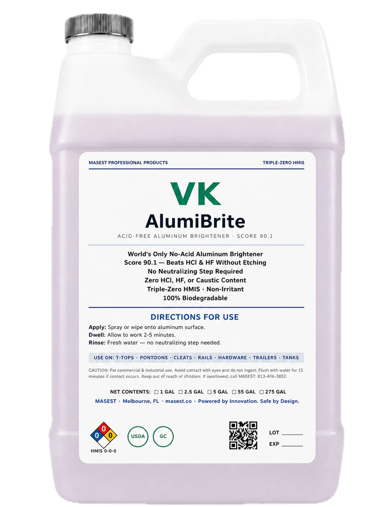
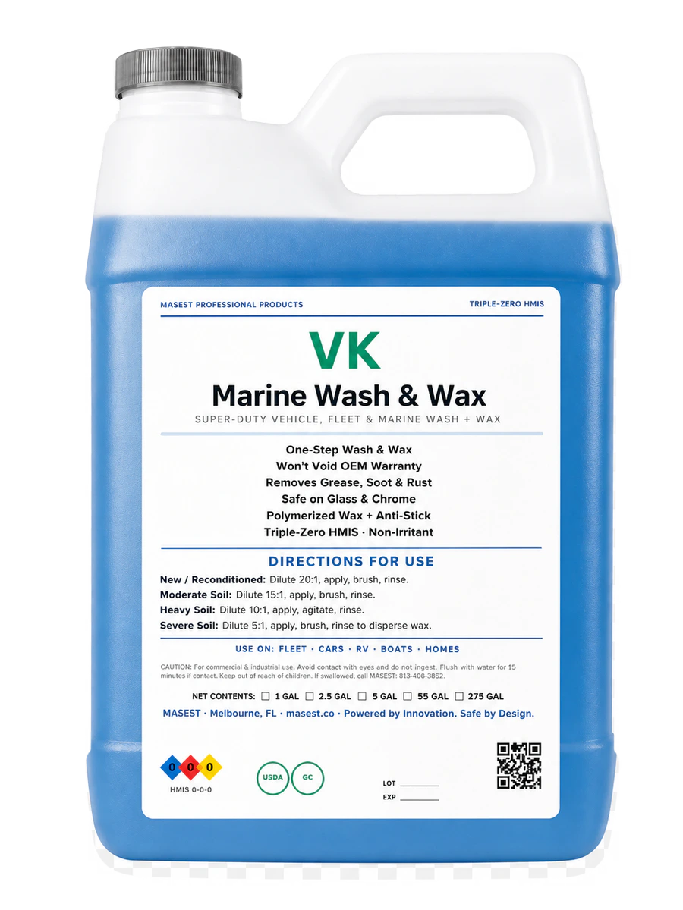
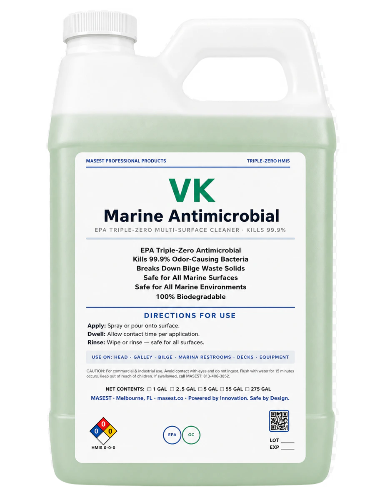

Marine productScale Buster
For boats, marinas & boatyards
Start here for: Hard-water scale and rust on marine cooling and metal surfaces.
Choose among eight marine products for routine washing, grease, scale, drains, aluminum, and label-directed antimicrobial cleaning.
Choose the cleaner by job, check it on the surface, and keep wash water contained while you work.
See VertKleen resultsTry VertKleen on the real mess and surface before changing the whole operation.
Compare the finished result, product, labor, water, repeat passes, and downtime—not the jug price alone.


Eight marine products. Choose the job, compare good starting points, then see sizes and pricing.
Choose a job to put good starting points first. All eight marine products remain available.
Showing all 8 marine cleaners.

Marine productStart here for: Hard-water scale and rust on marine cooling and metal surfaces.

Marine productStart here for: Marine HVAC coils, heat exchangers, and water-side scale.

Marine productStart here for: Drains, strainers, grates, and organic buildup.

Marine productStart here for: Decks, vinyl, glass, and everyday marine grime.

Marine productStart here for: Bilges, engines, service floors, grease, and diesel soot.

Marine productStart here for: Oxidized aluminum rails, pontoons, hardware, and trailers.

Marine productStart here for: Hulls, decks, topsides, and routine boat washing.

Marine productStart here for: Label-directed control of odor-causing bacteria and other non-public-health microorganisms.
Put VertKleen beside the cleaner you use today. Compare the finished result, time, water, and repeat work before making a wider switch.
| Surface or material | First check |
|---|---|
| Gelcoat, painted steel, and specialty coatings | Test a small, hidden area first and make sure the finish looks right. |
| Aluminum, stainless steel, and zincs | Test a small, hidden area first and make sure the finish looks right. |
| Glazing, vinyl, rubber, sealants, and teak | Test a small, hidden area first and make sure the finish looks right. |
Clean Hulls, decks, topsides, bilges, engine-room surfaces, lifts, aluminum rails, trailers, dock equipment, and service floors. Target Salt film, algae staining, diesel soot, bilge oil, grease, fish residue, road film, and aluminum oxidation. Take a before photo and note how long the job usually takes.
Start with a small, easy-to-compare area and make sure the finish looks right.
Use the same crew, tools, area size, and working time for VertKleen and the cleaner you use today.
Compare the finished surface, crew time, product, water, passes, downtime, and repeat work.